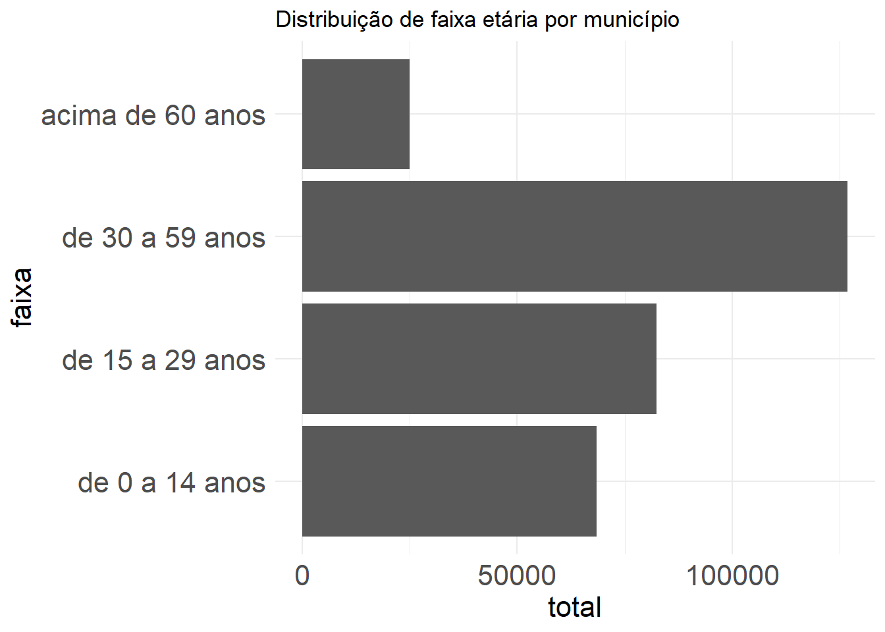

options(scipen = 999)
library(readxl)
library(tidyverse)
library(DT)Saúde Bucal - material suplementar
Procedimentos metodológicos
A construção do modelo de PDFT para saúde bucal baseado em necessidades foi elaborado a partir das orientações de Asamani et al. (2021) que sugerem algumas etapas, que serão descritas com maior detalhamento a seguir:
- Definição de escopo da metodologia em termos de cobertura jurisdicional, objetivos e horizonte temporal;
- Análise da necessidade de saúde bucal com base em aspectos da demografia, epidemiologia e serviços destinados da população a local;
- Tradução do número de serviços em número de profissionais necessários;
- Exploração das implicações em termos de recursos, como a oferta atual de profissionais e custos;
- Análise de sensibilidade para simulação de parâmetros de incerteza;
- Validação de modelo por meio de consulta a stakeholders.
Preparando ambiente do R
Carregando os pacotes necessários para o R.
1. Etapa 1 - Definição de escopo
A metodologia tem como escopo estimar a força de trabalho de cirurgiões dentistas atual e necessária para atuar em municípios brasileiros. Serão feitos cálculos para
2. Etapa 2 - Análise das necessidades de saúde bucal
A análise da necessidade de saúde bucal (NSB) foi construída a partir de três elementos: distribuição da população por faixa etária (P), prevalência de condições de saúde bucal (H) e procedimentos per capita (S).
2.1. Levantando a faixa etária (P)
A distribuição por faixa etária foi construída com base em dados do último censo (2022) e estão disponíveis na página do IBGE.
Para fins de exemplificação, vamos trabalhar apenas com um município como referência: Palmas (TO). Depois escalamos os resultados para o Brasil todo.
pop_tocantins <- read_excel("~/GitHub/saude_bucal/01_dados/pop_tocantins.xlsx")
pop_palmas <- pop_tocantins |>
filter(ibge == "1721000") |>
select(ibge, Município, de_0_a_14_anos,
de_15_a_29_anos, de_30_a_59_anos,
acima_de_60_anos) |>
gather(key = "faixa",
value = "total",
3:6) |>
mutate(faixa = gsub("_"," ",faixa)) |>
mutate(ibge = as.character(ibge)) |>
mutate(ibge = substr(ibge, 1, 6)) |>
mutate(id_faixa = case_when(faixa == "de 0 a 14 anos" ~ 1,
faixa == "de 15 a 29 anos" ~ 2,
faixa == "de 30 a 59 anos" ~ 3,
faixa == "acima de 60 anos" ~ 4))Plotando a informação de faixa etária. Nota-se que a faixa etária de 30 a 59 anos possui maior frequência em relação às demais.
ordem <- c("de 0 a 14 anos",
"de 15 a 29 anos",
"de 30 a 59 anos",
"acima de 60 anos")
pop_palmas$faixa <- factor(pop_palmas$faixa, levels = ordem)
pop_palmas |>
ggplot(aes(x = faixa, y = total)) + geom_col() +
theme_minimal() + coord_flip() +
theme(axis.title.x = element_text(size = 16),
axis.title.y = element_text(size = 16),
axis.text = element_text(size = 16)) +
ggtitle("Distribuição de faixa etária por município")
Cabe mencionar que o censo possui outras divisões de faixa etárias. No entanto, utilizamos estas para padronizar com os dados do parâmetro H, calculado a partir da pesquisa de SB 2010 (próximo tópico).
2.2. Prevalência de condições de saúde bucal (H)
O Ministério da Saúde - por meio do material Parâmetros Assistenciais para Programação Ambulatorial e Hospitalar no âmbito do SUS (Brasil, 2021), regulamentado pela portaria de consolidação nº1 de 2017 - traz uma série de parâmetros acerca da saúde bucal.
Um dos parâmetros é a cobertura de serviços de saúde. A cobertura foi calculada a partir da pesquisa SB 2010 para cada faixa etária e tipo de procedimento conforme a lógica da tabela baixo.
| Área | Expressões usadas para cálculo de cobertura |
|---|---|
| Atenção básica | NT_1 (Número de dentes necessitando de restauração de 1 superfície) + NT_2 (Número de dentes necessitando de restauração de 2 ou mais superfícies) + NT_6 (Número de dentes necessitando de extração) + NT_7 (Número de dentes necessitando de controle de lesão branca) + NT_8 (Número de dentes necessitando de selante) + P_CALC (Prevalência de cálculo) + P_BR (Prevalência de bolsa rasa). Foi então criada a variável COB_AB. Se COB_AB = 0 o indivíduo não necessita de procedimentos de atenção básica, se COB_AB =1 ele necessita. A cobertura de atenção básica foi então estimada pelo percentual de pessoas com COB_AB=1 |
| Endodontia | A cobertura de endodontia foi calculada a partir da variável NT_5 (Número de dentes necessitando de tratamento pulpar + restauração). Foi criada a variável ENDO onde ENDO=0 se NT_5=0 e ENDO=1 se NT_5≠0. Desta forma, a cobertura de endodontia foi então estimada pelo percentual de pessoas com ENDO=1 |
| Periodontia especializada | A cobertura de periodontia especializada foi estimada pelo percentual de pessoas com a variável P_BP (Prevalência de bolsa profunda) = 1 |
| Prótese | A cobertura de prótese foi calculada pelo percentual de pessoas com a variável NECPROT (Necessidade geral de prótese) ≠ 0 |
Com base nos valores de cobertura, é possível então calcular qual a cobertura para cada tipo de procedimento e cada faixa etária.
Vamos fazer a leitura dos dados e filtrar para Palmas-TO.
Cabe destacar que, devido à estrutura da SB2010, estes parâmetros foram calculados para capitais de cada estado ou interior da região.
# Lendo dados
cobertura_sb <- read_excel("~/GitHub/saude_bucal/01_dados/cobertura sb.xlsx") |>
mutate(ibge = substr(ibge, 1, 6))
# apresentando dados em formato de tabela interativa
cobertura_sb |>
filter(municipio == "Palmas") |>
select(-li_cobertura, -ls_cobertura) |>
datatable()Considerando os dados de população e de cobertura, temos os seguintes resultados para o parâmetro (H):
pop_coberta <-
pop_palmas |>
left_join(cobertura_sb, by = c("ibge",
"id_faixa")) |>
select(ibge, municipio, faixa,
total, procedimento, cobertura) |>
mutate(populacao_coberta = cobertura * total) |>
mutate(populacao_coberta = round(populacao_coberta, 2))
pop_coberta |>
datatable()2.3. Parâmetros normativos de procedimentos per capita (S)
Os cálculos de necessidade normativa por procedimento per capita (S) foram estimados também no caderno de parâmetros de acordo com o quadro a seguir.
| Área | Procedimentos |
|---|---|
| Atenção básica | No banco de dados do projeto SB BRASIL 2010 foram transformados os códigos 0 (hígido), A (não examinado) e X (excluído) das variáveis CPI17, CPI11, CPI 27, CPI37, CPI31 e CPI47 em 0 e em 1 para as variáveis que tivessem o código 2 (cálculo) e 3 (bolsa rasa). Ao final essas variáveis foram somadas e a variável NECPERIO_AB criada para armazenar esta soma. Foram somados os valores referentes as variáveis NT_1, NT_2, NT_6, NT_7 e NT_8 formando a variável NEC_AB. Finalmente foram somadas NECPERIO_AB e NEC_AB para se obter a variável NEC_AB_TOTAL. Foi então obtida a média da variável NEC_AB_TOTAL estratificada por idade e domínios geográficos (capitais e interior). |
| Endodontia | Foi obtida a média da variável NT_5 (Número de dentes necessitando de tratamento pulpar + restauração) estratificada por idade e domínios geográficos (capitais e interior). |
| Periodontia | No banco de dados do projeto SB BRASIL 2010 foram transformados os códigos 0 (hígido), A (não examinado) e X (excluído) das variáveis CPI17, CPI11, CPI 27, CPI37, CPI31 e CPI47 em 0 e em 1 para as variáveis que tivessem o código 4 (bolsa profunda). Ao final essas variáveis foram somadas e a variável NECPERIO_ESPEC criada para armazenar esta soma. Foi então obtida a média da variável NECPERIO_ESPEC estratificada por idade e domínios geográficos (capitais e interior). Para as idades de 5 e 12 anos esta variável não foi mensurada no projeto SB BRASIL 2010, portanto não há dados de necessidade normativa para a faixa de 0 a 14 anos. |
| Prótese | A variável NECPROT foi transformada em NUMPROT (número de próteses) como explicitado a seguir:
Foi então obtida a média da variável NUMPROT estratificada por idade e domínios geográficos (capitais e interior). Para as idades de 5 e 12 anos esta variável não foi mensurada no projeto SB BRASIL 2010, portanto não há dados de necessidade normativa para a faixa de 0 a 14 anos. |